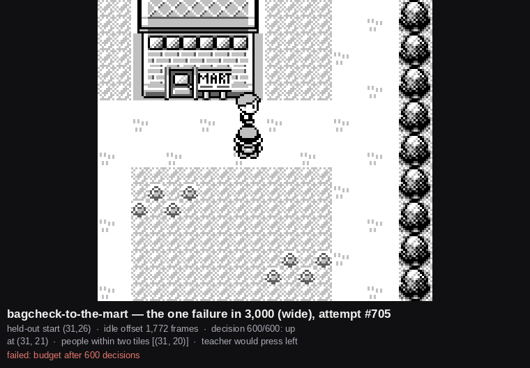

AgentGB · Failure analysis
The one failure in twelve thousand
Four cells of one certification table are 3,000 attempts each — two links, two spreads — and exactly one attempt of the twelve thousand fails. That single attempt is the only evidence the pair has produced about how it can still go wrong, so it was chased instead of rounded away.
It reproduces exactly. A certification's start states are a pure function of the link, the held-out split, the seed and the spread, so no rollout has to be kept for an attempt to be run again: attempt #705 of 3,000, held-out start (31,26), start offset 1,772 frames. Re-run, it fails the same way. The fifteen other attempts from that same tile all reach the goal in 30 to 67 decisions.

The anatomy
| Where it stood | (31,21) for 533 of 600 decisions |
| What it pressed there | up 177, start 89, and 267 more with a menu on screen |
| What the teacher would have pressed | left 177 — a clean 177-for-177 divergence |
| Its own probabilities on those 177 | p(up) median 0.926; p(left) median 0.020, max 0.107 |
One press of left, at the moment it is stuck | reaches the goal in 79 decisions |
Three explanations, all closed by measurement
Not the route. The teacher, driving from the same tile with the same offset, reaches the Mart in 30 decisions. There is a way round and the privileged player finds it.
Not a wanderer who would eventually move. The person steps twice, at decisions 13 and 61, reaches (31,20), and then does not move for the remaining 533 decisions — about 17,000 frames, or 4.7 minutes of game time. Checked under four different player behaviours from the stuck moment, including backing off a tile and standing still, and pacing 266 tiles up and down. It stays parked in all four.
Not the bag check. The run spends 301 of its 600 decisions with a
menu on screen, but the menus are not what pins the person: an arm that presses
only b runs the overworld continuously for 533 decisions and the
person does not move either.
Which weights these rows belong to
Every rate for this link predates a corpus re-collection on 23 Aug 2026. The round-0 corpus it was trained from carried 105 leaked frames; a fresh corpus collected under the fix audits clean, and no student has been retrained or re-certified on it. The certification file does not record which weights it ran, so these rows are marked unattributed rather than filled in from a directory convention.
This is a measurement of one reproducible attempt. It has not been re-measured since.
The attempt, its start state and its offset are re-runnable from the link, the held-out split, the seed and the spread. The image is a committed artefact of the run.
← Back to devlog